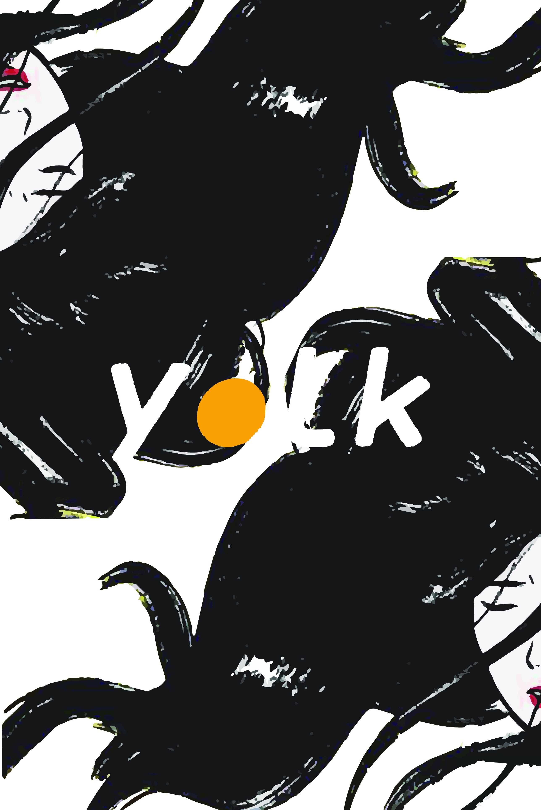
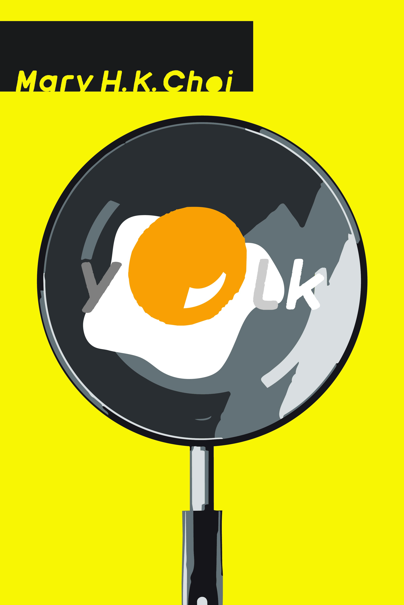
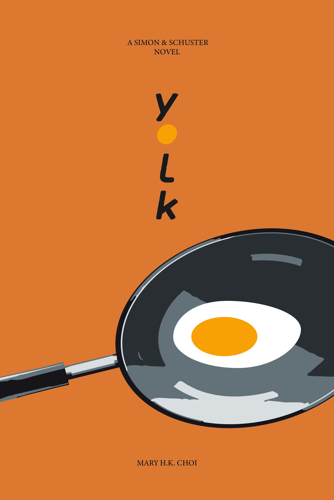
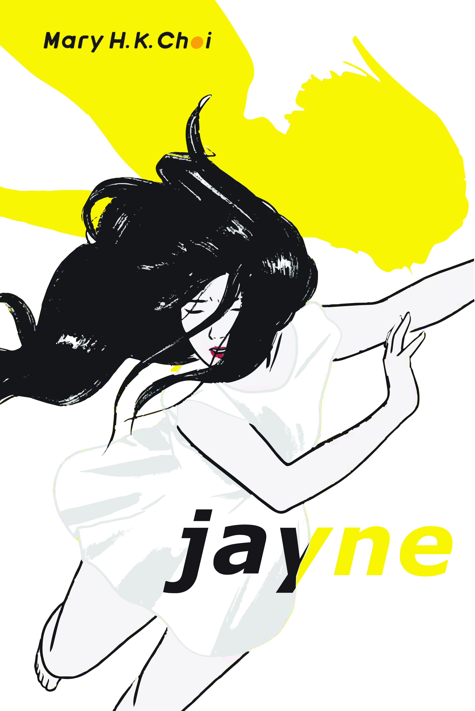
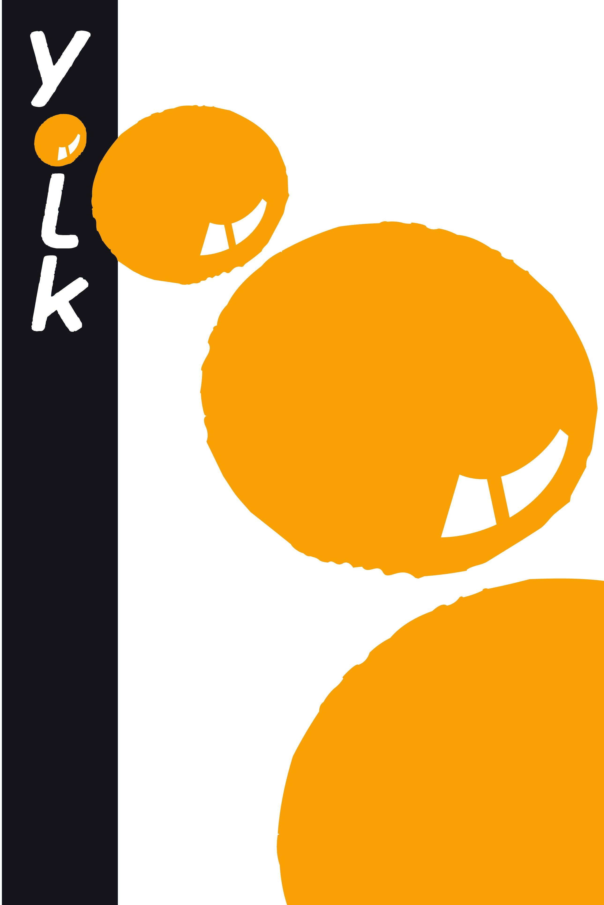
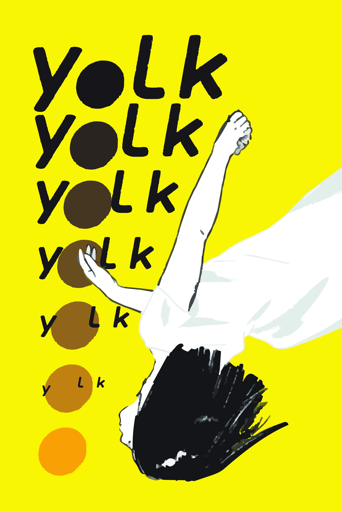
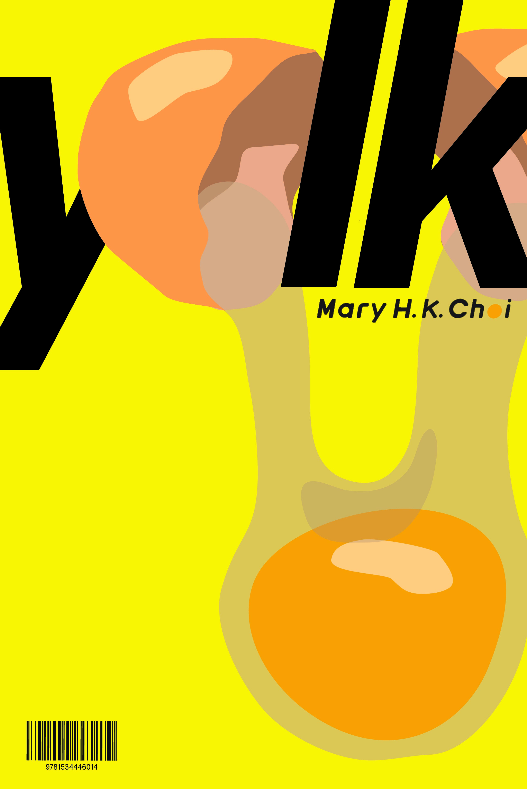
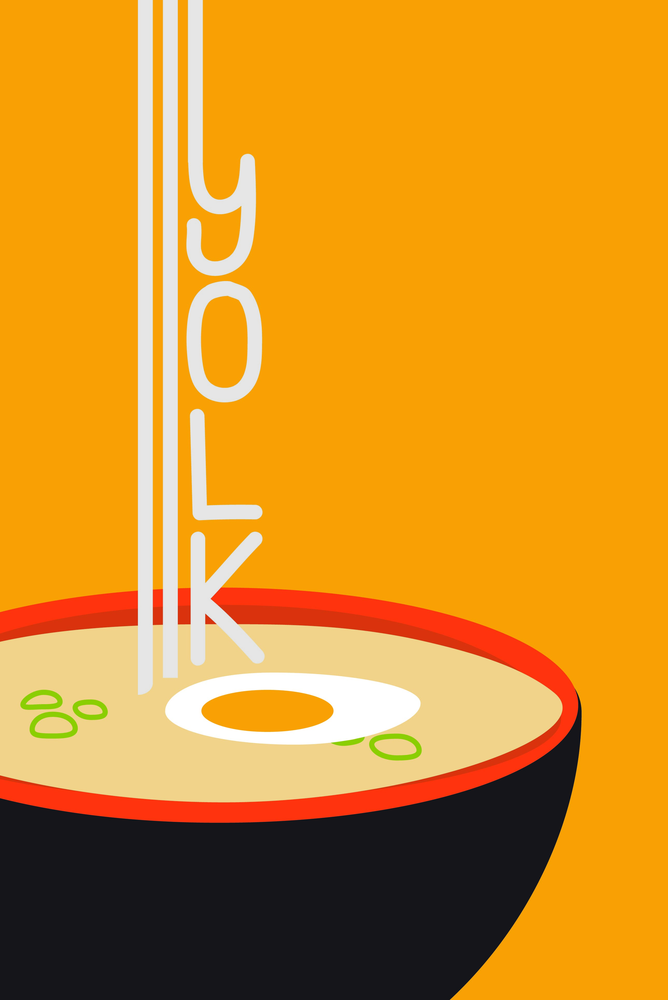
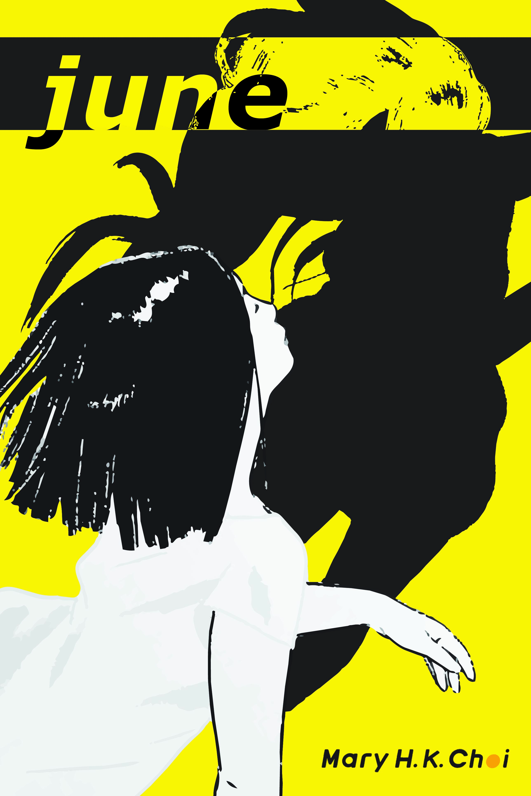

For a project in my Graduate Graphic Design Studio class, we were asked to create 50 iteration using the elements and color palette of an original poster. I selected the cover of Yolk by Mary H.K. Choi, one of my favorite books, as my poster subject. Using Adobe Illustrator, I created 50 variations of the book cover. Here are my selected favorites.








